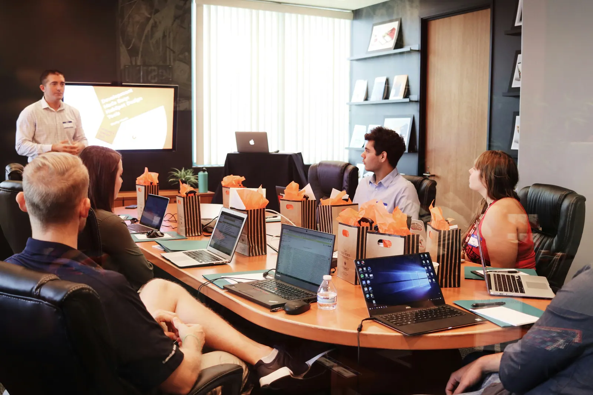

Venture development
Opportunity assessment, feasibility, business-model design, planning, launch preparation, and growth strategy.

Focused services that help founders, organizations, and investors move from uncertainty to a clearer commercial path.
Engagements can focus on a single business challenge or connect several disciplines into a wider development programme.
Opportunity assessment, feasibility, business-model design, planning, launch preparation, and growth strategy.
Structured guidance for emerging companies developing their offer, systems, market fit, and operating confidence.
Repeatable models, process documentation, quality controls, commercial terms, and expansion readiness.
Clear investment propositions, financial narratives, supporting materials, and due-diligence preparation.
Roles, workflows, controls, reporting, and management systems aligned to how the enterprise must perform.
Positioning, brand identity, messaging, and customer-facing systems that create a consistent market presence.
Hands-on support for execution, performance, operating cadence, and multi-venture coordination.
Practical advice for growth, organizational improvement, market entry, and strategic decision-making.
We begin with the problem, the market, and the evidence—not a predetermined solution.
Each engagement is shaped around the decisions that matter next. We establish what is known, identify what must be tested, and translate the findings into clear responsibilities and practical next steps.
A polished proposal matters. An enterprise that can deliver matters more.
Every venture is different, but a disciplined sequence keeps important questions from being skipped.
Define the need, customer, and opportunity.
Test demand, feasibility, and risk.
Design the model, roles, and economics.
Create the brand, systems, and offer.
Put operations into the market.
Learn, strengthen, and expand responsibly.